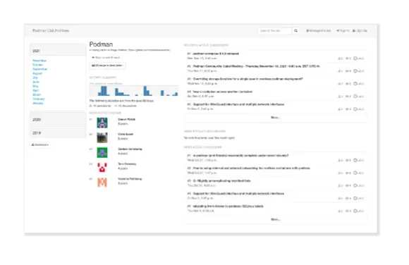

Community
Chat with the Podman community
The Podman developers are generally around during CEST and Eastern Time business hours, so please be patient if you’re in another time zone!
Podman Community Meetings
Community Meeting
11 AM US ET /5 PM CET
Podman Community Meeting
1st Tuesday of even numbered months
Cabal Meeting
11 AM US ET / 5 PM CET
Podman Community Cabal
(Paused) formerly 1st Tuesday of odd numbered months
Full Meeting Archive
Previous meetings, transcripts & minutes
Recordings, notes and searchable transcripts from all past sessions.
Mailing List
Browse the mailing list
Subscribe or post to the mailing list
Option 1
Send emailOption 2
Sign up page
Submitting Issues & Pull Requests
Submitting Issues
Don't include private / sensitive info in issues!
- Feel free to add your scenario, or additional information, to the discussion.
- Subscribe to the issue to be notified when it is updated.
- Include as much detail as possible
- Try to remove any extra stuff that doesn't really relate to the issue itself
Submitting Pull Requets
While bug fixes can first be identified via an "issue", that is not required. It's ok to just open up a PR with the fix, but make sure you include the same information you would have included in an issue - like how to reproduce it.
PRs for new features should include some background on what use cases the new code is trying to address. When possible and when it makes sense, try to break-up larger PRs into smaller ones - it's easier to review smaller code changes. But only if those smaller ones make sense as stand-alone PRs. Regardless of the type of PR, all PRs should include:
- Well-documented code changes.
- Additional testcases. Ideally, they should fail w/o your code change applied.
- Documentation changes.
Special thanks to our contributors
The Podman community has contributors from many different organizations, including: